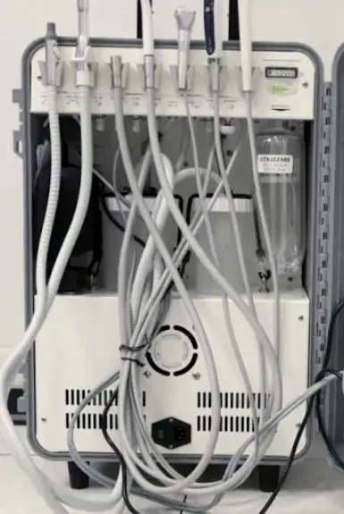

Aperti anche il sabato, tutto il giorno
Lunedì–sabato, 8:00–20:30. Il sabato per intero. Per i pazienti dello studio il dentista resta reperibile anche in urgenza fuori orario.
Lo studio è aperto dal lunedì al sabato dalle 8:00 alle 20:30, il sabato per l'intera giornata. I pazienti già in cura hanno inoltre un numero di reperibilità attivo anche fuori orario. Più presto chiami nella giornata, più è probabile trovare spazio.
Dolore che non passa con l'antidolorifico · gonfiore del viso o della gengiva · trauma con dente rotto o espulso · ascesso · protesi o corona che si è staccata · sanguinamento che non si arresta dopo un'estrazione. In tutti questi casi: chiama, non aspettare lunedì.
Se un dente permanente viene espulso da un trauma, i minuti contano. Raccoglilo tenendolo per la corona, mai per la radice, non strofinarlo, immergilo nel latte o nella soluzione fisiologica, o, in mancanza d'altro, tienilo nella tua saliva, e vieni subito. Reimpiantato entro 30–60 minuti ha buone probabilità di attecchire.
Lo studio effettua il servizio a domicilio: il dentista si sposta a casa o in casa di cura con il riunito portatile, insieme a un odontotecnico per le riparazioni di protesi. Allo spostamento si aggiungono 150 € sul totale della prestazione. È pensato per pazienti allettati, anziani e persone con disabilità che non possono raggiungere lo studio.

Per chi non può muoversi il dentista si sposta a casa o in casa di cura con questa attrezzatura: turbina, micromotore, aspirazione e siringa aria-acqua. Quando serve viene anche l'odontotecnico, per riparare una protesi sul posto.
Un dente permanente espulso da un trauma si può reimpiantare. Quanto attecchisce dipende quasi solo da come viene tenuto nel tragitto e da quanto dura il tragitto.
La parte bianca, quella che si vede quando sorridi. Le cellule del legamento parodontale stanno sulla radice, e sono quelle che permettono al dente di riattaccarsi.
Niente sfregamenti, niente spazzolino, niente disinfettanti. Se è caduto per terra si sciacqua un istante sotto l'acqua corrente, senza strofinare.
Il latte è la soluzione più a portata di mano con la giusta concentrazione salina. In alternativa soluzione fisiologica o, in mancanza d'altro, la tua saliva. Mai a secco.
Reimpiantato entro 30–60 minuti ha buone probabilità di attecchire. Chiama mentre sei in strada: 010 5959492.
Lunedì–sabato, 8:00–20:30. Il sabato per intero. Per i pazienti dello studio il dentista resta reperibile anche in urgenza fuori orario.
Radiografie endorali, panoramica e TAC 3D si eseguono in studio, nello stesso momento. Con un dolore in corso resti qui fino alla diagnosi.
Defibrillatore, ossigeno, saturimetro, misuratori di pressione, glicemia e INR, 14 farmaci d'emergenza. Tutto il personale è formato e si esercita ogni mese.

Direttore Sanitario · Chirurgo orale, implantologo, protesista, sedazionista
Fondatore dello studio. Cinque master universitari di II livello, oltre 4.000 impianti osteointegrati e la sedazione cosciente praticata con una formazione universitaria dedicata.
Dopo la prima visita ricevi un preventivo scritto con le lavorazioni una per una, i tempi previsti e il totale, alle cifre del tariffario pubblico.
IVA esente ai sensi dell'art. 10 DPR 633/72. Detraibile al 19% nella dichiarazione dei redditi.
Chiama il 010 5959492 il prima possibile nella giornata: più presto chiami, più è probabile che ci sia spazio. Se sei già paziente dello studio, dillo subito.
No. Le urgenze si accolgono anche se non ci hai mai visto prima. Al telefono servono il nome, un recapito e la descrizione del sintomo.
Sì, tutto il giorno, 8:00–20:30: il sabato ha lo stesso orario degli altri giorni.
Sì, per pazienti che non possono muoversi. Si va a casa o in casa di cura con l'attrezzatura portatile. Va concordato telefonicamente.
Denti del giudizio inclusi, estrazioni difficili, parodontologia e innesti. Con TAC 3D e chirurgo dedicato.
Otturazioni estetiche e devitalizzazioni: tutto quello che serve per tenerti il dente che hai.
Sedazione cosciente inalatoria ed endovenosa, ipnosi clinica. Prima si decide con cosa spegnere l'ansia, poi si comincia.
Comprende l'esame completo della bocca, le radiografie se servono, la diagnosi e il piano di cura scritto con tutti i costi.
Lunedì – Sabato · 8:00 – 20:30 · Via Maragliano 5, Genova · 3 posti auto gratuiti